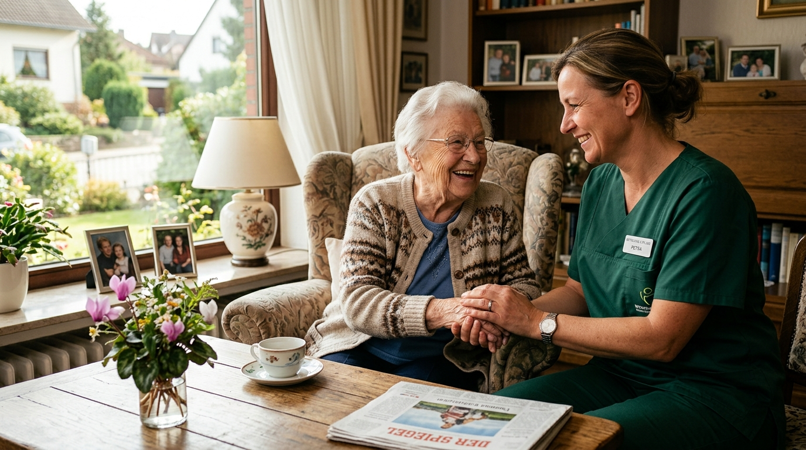

Pflege mit Herz. Zuhause in guten Händen.
Wir unterstützen Sie und Ihre Angehörigen kompetent, zuverlässig und mit Herz – für ein selbstbestimmtes, würdevolles Leben in den eigenen vier Wänden.
Die **YADE Ambulante Pflege & Betreuung** steht für eine moderne, würdevolle und menschliche Pflege direkt im Herzen von **München-Neuperlach**. Unser Pflegeverständnis gründet auf Respekt, Vertrauen und individueller Zuwendung.
Es ist unser höchster Anspruch, Ihnen oder Ihren Angehörigen ein selbstbestimmtes Leben im vertrauten häuslichen Umfeld zu ermöglichen. Mit fachlicher Exzellenz und warmherziger Betreuung entlasten wir Familien spürbar und schaffen Sicherheit für jeden Tag.
„Wir unterstützen Sie und Ihre Angehörigen kompetent, zuverlässig und mit Herz – für ein selbstbestimmtes Leben in den eigenen vier Wänden.“
– Ihr YADE Pflegedienst-Team ♡Warmherzige Zuwendung und empathischer Umgang auf Augenhöhe stehen bei uns an erster Stelle.
Examinierte Pflegefachkräfte gewährleisten kontinuierliche Qualität nach höchsten medizinischen Standards.
Pünktliche Hausbesuche, feste Bezugspflegekräfte und lückenlose Erreichbarkeit Tag & Nacht.
Pflegepläne, die sich exakt an Ihre persönlichen Gewohnheiten und Wünsche anpassen.
Wir bieten ein lückenloses Spektrum an ambulanter Pflege, medizinischer Versorgung und Alltagsunterstützung in München-Neuperlach.
Einfühlsame Hilfe bei allen alltäglichen Verrichtungen zur Erhaltung Ihrer Selbstständigkeit.
Medizinische Versorgung auf ärztliche Verordnung durch examiniertes Pflegepersonal.
Zuverlässige Unterstützung im Haushalt für ein sauber und wohlig gestaltetes Zuhause.
Freundliche Begleitung für ein aktives, gesellschaftliches Leben und Entlastung für Angehörige.
Fundierte Orientierung im Pflege-Dschungel, Hilfe bei Anträgen und Nachweisen.
Flexible Sonderleistungen für besondere Lebensphasen und Urlaubsvertretungen.
Wir vereinen fachliche Höchststandards mit menschlicher Nahbarkeit – für ein rundum sicheres Gefühl zuhause.
Liebevolle Betreuung, Echtheit und echte emotionale Zuwendung prägen unseren täglichen Einsatz bei Ihnen.
Hochqualifiziertes, kontinuierlich geschultes Pflegefachpersonal sichert fachgerechte medizinische Versorgung.
Feste Ansprechpartner und eine verlässliche Bezugspflege bauen echtes Vertrauen und Sicherheit auf.
Unser Telefonnotruf steht Ihnen rund um die Uhr zur Verfügung. Wir lassen Sie im Ernstfall nicht allein.
Spürbare Entlastung, verständliche Beratung und Unterstützung bei Anträgen nehmen Familien die Sorgen.
Flexible Einsatzzeiten und bedarfsgerechte Pflegekonzepte, abgestimmt auf Ihre persönliche Lebenssituation.
Wir begleiten Sie verlässlich von der ersten Anfrage bis zum Start der täglichen Betreuung.
Nehmen Sie unverbindlich Kontakt mit uns auf – per Telefon unter 089 89640931 oder online.
Wir führen ein ausführliches, kostenloses Erstgespräch bei Ihnen zuhause in München-Neuperlach durch.
Gemeinsam erstellen wir einen maßgeschneiderten Versorgungsplan und unterstützen bei der Kostenklärung.
Ihr festes Bezugspflegeteam startet wie vereinbart die zuverlässige Betreuung in Ihren vier Wänden.
Betreute Patienten
Pflegekräfte
Zufriedenheit
Notfall-Erreichbar
„Die Pflegekräfte von YADE sind ein absoluter Segen für meine Mutter in Neuperlach. Pünktlich, überaus herzlich und fachlich erstklassig. Ich kann beruhigt zur Arbeit gehen, weil ich weiß, dass Mutter in besten Händen ist.“
Angehörige aus München-Neuperlach
Hier finden Sie wichtige Antworten rund um Pflegeleistungen, Kostenübernahmen und Versorgungsabläufe.
Vertrauen beginnt mit einem Gespräch. Wir freuen uns darauf, Sie kennenzulernen.
Hanns-Seidel-Platz 1
81737 München (Neuperlach)
Büro: Mo – Fr: 08:00 – 17:00 Uhr
Pflegedienst & Notruf: 24 Std. / 7 Tage
Füllen Sie einfach das Formular aus. Wir melden uns umgehend bei Ihnen.
Hinterlassen Sie Ihre Telefonnummer. Wir rufen Sie gerne zu Ihrer Wunschzeit zurück.